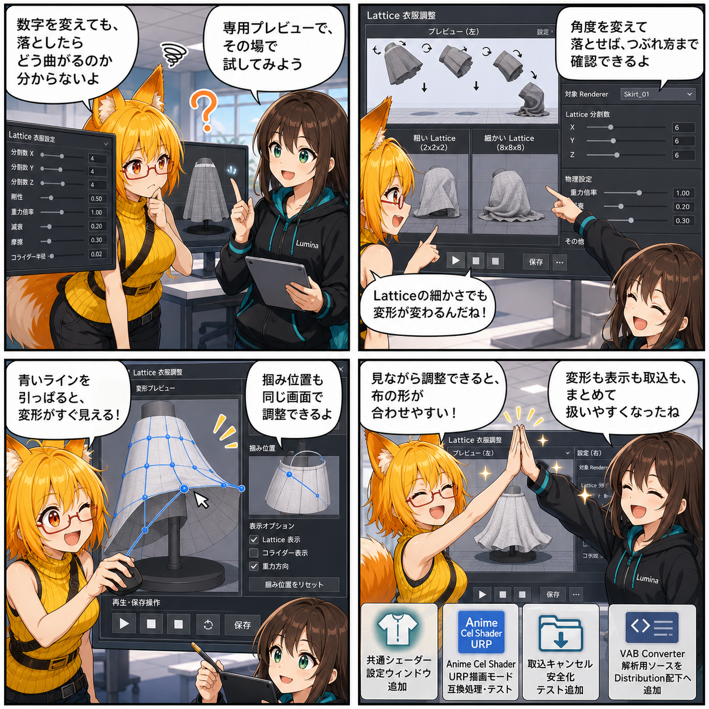

布を落として、つかんで、引っぱって。変形をその場で確かめる日
2026-08-02 の開発日記では、Latticeを使った衣服変形を専用ウィンドウ上で視覚的に調整できる仕組みを中心に、シェーダー設定の統一、Anime Cel Shader URP対応、ドラッグ＆ドロップ取込の終了処理改善などを取り上げます。

集計期間には6コミットが入り、最終HEADは aab3227（「Lattice衣服調整画面の構成を整理」）でした。確認時点でViewer側の未コミット差分はありませんでした。
今日の主題：変形結果を見ながらLatticeを調整する
衣服をLatticeで変形する機能は、数値だけを編集しても、実際にどの方向へ曲がるのか、落下したときにどこまで潰れるのか、つかんで引っぱったときにどのような形になるのかを把握しにくい問題がありました。
そこで、専用の「Lattice衣服調整ウィンドウ」を追加しました。対象Rendererを選び、Latticeの分割数や変形設定を変更しながら、プレビュー上で結果を確認できる構成です。Play Mode中のアバターパーツ選択、オブジェクトの回転、落下方向の確認、掴み位置の調整、引張変形の確認といった作業を、一つの画面へまとめるための基盤になっています。
落下・回転・引張を目で確認
調整ウィンドウでは、衣服を異なる角度へ回転させて落下させ、接地時の変形を確認できるようになりました。Latticeメッシュの細かさも調整できるため、大きく柔らかく曲げる場合と、局所的な形状を細かく整える場合を切り替えられます。
また、青い操作ラインや交点をマウスでつかんで引っぱり、変形の方向や強さを直接確認する操作も追加されています。数値入力と視覚操作を往復しながら調整できるため、「設定を保存して本編へ戻るまで結果が分からない」という手間を減らせます。
調整画面の構成を整理
初回実装後には、情報量が多くなった画面を整理しました。左半分をプレビュー、右半分をRenderer選択や各種設定、下部を再生・スクラブ・JSON保存操作として役割ごとに配置し、操作項目を説明するドキュメントも追加しています。
単に機能を増やすだけでなく、どこを操作すれば何が変わるのかを理解しやすくすることも、編集ツールでは重要です。今回の再構成により、今後のリアルタイム操作やPlay Mode連携を追加しやすい土台になりました。
アバターのシェーダー設定を一か所へ
アバター表示で使用するシェーダー設定をまとめて管理する共通設定ウィンドウも追加しました。描画プロファイルを共通Assetへ保存し、個々の画面や処理が同じ設定を参照する構成です。
これにより、シェーダーごとの品質や描画方式を複数箇所で別々に管理する状態を減らし、Viewer全体で設定を揃えやすくなりました。設定内容を確認するEditorテストも追加されています。
Anime Cel Shader URPを表示モードへ追加
Viewerで選択できる描画モードに、Anime Cel Shader URPが追加されました。インポート時の互換処理、Shader GUI互換、ビルド時のShader収録、設定UI、描画プロファイル制御まで含めて整備されています。
外部Shaderを導入しただけでは、Unityのバージョン差やURP設定、ビルド時のShader除外などによってエラーや表示崩れが発生する場合があります。今回の対応では、Viewer内で継続して選択・利用できるよう、周辺処理とテストもまとめて追加しました。
ドラッグ＆ドロップ取込を安全に終了
PMXなどをウィンドウへドラッグ＆ドロップして読み込む処理には、画面やアプリの終了後も非同期処理が残らないよう、寿命に連動したキャンセル処理を追加しました。
取込中に対象画面が閉じられた場合、処理が古いUIへ結果を返したり、終了済みObjectへアクセスしたりしないようにします。EditorとRuntime双方のテストも追加されました。
解析用VAB Converterソースを整理
解析用として共有するVAB Converterのスナップショットも、専用のDistributionフォルダへ追加されました。依存関係、ソースマップ、マニフェスト、参照実装をまとめ、Viewer本体の正本コードとは分離してあります。
継続的に配布・保守する製品パッケージではなく、VAB 4.5の変換構造を確認するための解析資料という位置づけです。
4コマの裏話
今回は、ろひがLattice設定の数値を眺めながら「結局、落としたらどう曲がるの？」と困るところから始まります。ルミナが専用ウィンドウを開き、衣服を回転させて落としたり、青いラインを引っぱったりして、変形結果をその場で確認。最後は、細かさや掴み位置を調整した衣服が自然に変形し、二人で完成を喜ぶ流れです。
今日のまとめ
2026-08-02の記事対象期間では、Lattice衣服変形が「設定値を入力する機能」から「結果を見ながら調整する編集環境」へ大きく進みました。
同時に、シェーダー設定の共通化、Anime Cel Shader URP対応、ドラッグ＆ドロップ取込のキャンセル処理、解析用Converter資料の整理も進んでいます。アバターの見た目を調整する機能と、それを安全に読み込み・表示する基盤の両方が強化された一日です。
本日のひとこと
数字だけでは分からない布の気持ちも、落として引っぱれば少し見えてくる。